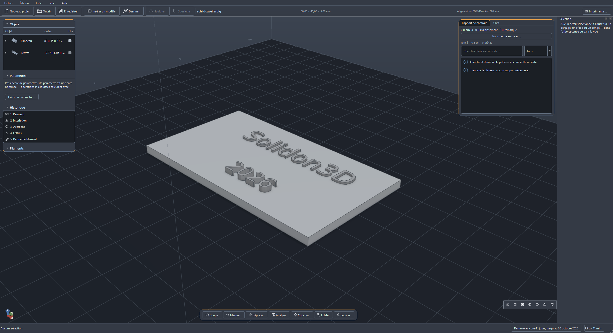
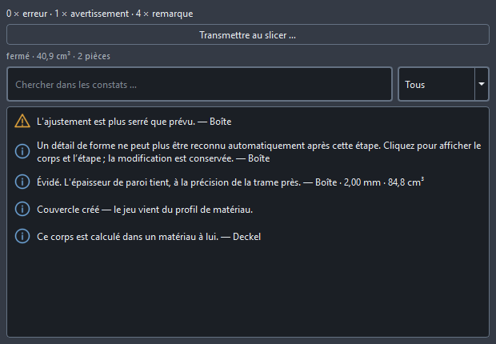
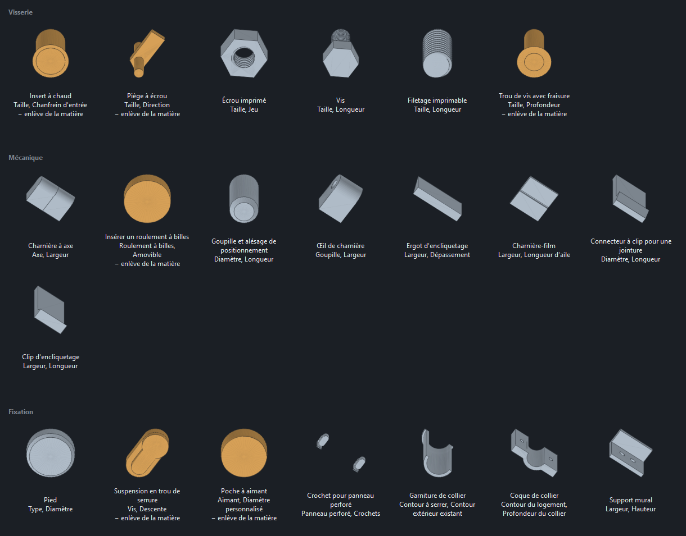
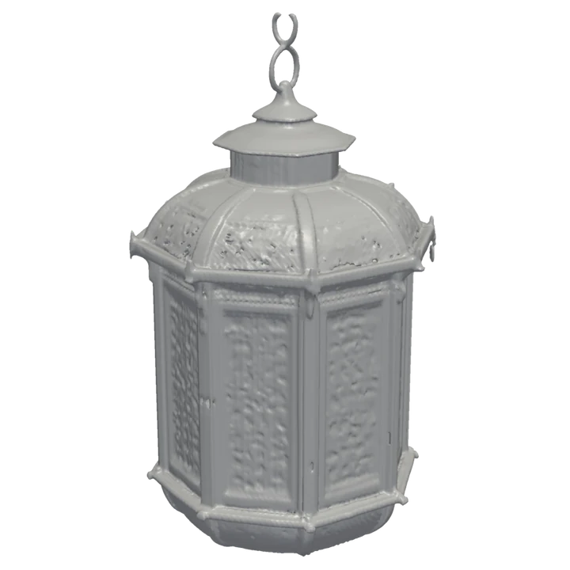
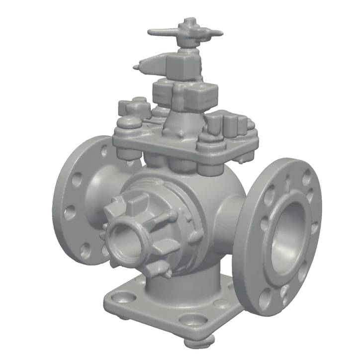
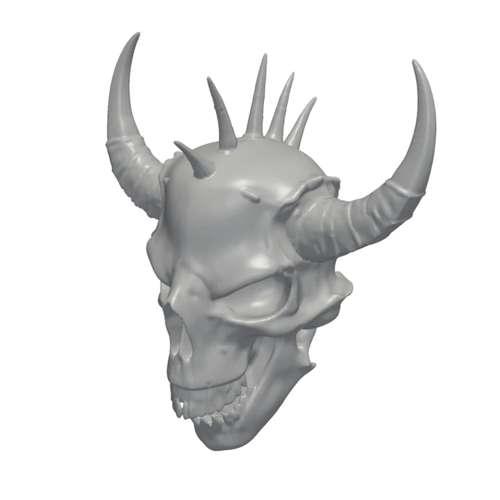

La pièce téléchargée ne s'ajuste pas. Ajustez-la.
Glissez le STL, percez un trou, ajoutez un couvercle, prenez l'ajustement dans le profil de matériau — et avant même de slicer, le rapport de contrôle dit ce qui tournera mal à l'impression. Solidon3D retouche les modèles des autres, construit les vôtres et met au propre ceux qui sont générés. En local, sans compte, sans abonnement ; un agent IA manie les mêmes outils que les menus, et la géométrie est calculée par du code, jamais par le modèle de langage.
Complète et sans clé : pas de filigrane, pas de blocage d'export, aucune fonction verrouillée. Elle fonctionne jusqu'au 30 octobre 2026 et ne démarre plus ensuite — vos fichiers de projet n'en sont pas affectés.
Prévenez-moi quand elle sera làWindows affiche un avis bleu pour une application nouvelle et encore non signée : Informations complémentaires → Exécuter quand même. La signature suivra dès que le certificat sera en place.
Nouvelles versions. À partir de la version 0.1.4, Solidon vérifie au démarrage s’il en existe une plus récente et la propose au téléchargement — téléchargée et installée uniquement après votre confirmation, et cela se désactive dans les réglages. Dans la version 0.1.3, le chemin est Aide → Chercher une nouvelle version.
- Fonctionne hors ligne
- Aucun compte
- Aucune télémétrie
- Vos fichiers restent les vôtres
- Windows, macOS, Linux

Ça vous rappelle quelque chose ?
Les quatre phrases qu'on entend le plus souvent autour d'une imprimante — et ce que Solidon3D en fait.
-
Le trou est 0,2 mm trop petit, et je n'ai pas de CAO.
Cliquer la face, changer la cote. Même dans un STL téléchargé — perçages, poches et épaisseurs de paroi sont des caractéristiques nommées, pas un nuage de triangles.
-
L'impression a lâché à 80 %, à cause d'un îlot.
L'analyse des couches le voit avant. Surplombs, îlots, parois trop minces et besoin de supports — avant que le slicer n'y passe du temps.
-
Le couvercle coince. Il n'est entré qu'au troisième essai.
Des ajustements tirés du profil de matériau. Jeu, ajustement serré ou affleurant sont déduits d'une échelle de calibrage imprimée une seule fois, pas estimés.
-
La pièce dépasse le plateau de 40 mm.
Découper et goupiller en une étape. La découpe automatique pose d'un coup les goupilles, les perçages et les ajustements qui vont avec.
Quatre voies vers la pièce
Toutes les quatre mènent à la même scène, au même historique et au même rapport de contrôle. Vous choisissez pièce par pièce, pas programme par programme.
Modifier un modèle téléchargé
Déposez le fichier — ou tirez le lien depuis MakerWorld, Printables ou Thingiverse directement du navigateur dans la fenêtre, sans passer par le dossier de téléchargements. Lisez le rapport de contrôle, cliquez une face ou un perçage — puis dites dans le chat ce que cela doit devenir, ou choisissez dans le menu contextuel. Comparez avant/après, appliquez, exportez.
Construire du neuf, avec des cotes
Décrivez ce qu'il vous faut. L'agent crée des paramètres et pose des blocs testés — filetages, inserts à chaud, charnières. Tournez les chiffres, le modèle suit aussitôt.
À partir d'un texte ou d'une image
Un maillage généré traverse automatiquement la chaîne de réparation, est ramené à une résolution avec laquelle on peut travailler, reçoit un rapport de contrôle et, au besoin, est découpé et goupillé — jusqu'à ce qu'il repose, imprimable, sur le plateau. Il faut un ComfyUI local avec un modèle générateur et une carte graphique musclée ; sans les deux, les voies 1 et 2 restent entièrement utilisables.
Des figurines à la main
Certaines formes ne se cotent pas. Assemblez grossièrement des corps de base, fusionnez-les en douceur, uniformisez le maillage — puis sculptez avec six pinceaux. Toute la séance reste une étape de l'historique, donc modifiable.
Ce qu'aucun logiciel de sculpture ne fait : pendant que vous sculptez, l'épaisseur de paroi suit. Les zones trop minces s'affichent en chiffres dans le bandeau — pas dans le slicer, une fois la forme finie.
Ce qui fait la différence
Six des douze fonctions, une phrase chacune — toutes en images sur la page des fonctions.


- Un agent IA qui ne devine rien. Une phrase dans le chat devient une proposition qu'un seul Annuler retire entièrement. La géométrie est calculée par du code, jamais par le modèle de langage — et c'est mesuré : une suite de 39 requêtes de référence tourne contre chaque modification de l'agent.
- Un rapport de contrôle avant l'impression. Zones ouvertes, normales inversées, parois sous deux cordons — chaque constat saute à l'endroit du modèle qu'il vise et porte une action proposée.
- Changer un chiffre au lieu de reconstruire. L'historique est non destructif : l'épaisseur de paroi passe de 2,40 à 3,60, et l'évidement, le couvercle, les perçages et les ajustements se recalculent.
- Dix-sept blocs testés. Piège à écrou, filetage, insert à chaud, charnière-film — les cotes viennent d'une table de pièces normalisées, pas de l'intuition.
- L'analyse des couches sans slicer. Surplombs, îlots, portées de pont et volume de support ; la recherche d'orientation propose la position qui en produit le moins.
- Des esquisses sous contraintes. Dix contraintes tiennent le dessin, et le contour entre dans le noyau B-Rep comme courbe exacte — un cercle devient un cylindre, pas un polygone.
Quand le modèle sort d'une IA
Un générateur vérifie que le maillage est fermé. Ce qu'il ne vérifie pas : si la paroi est plus épaisse que votre buse, si un surplomb tient, si un îlot commence en plein vide et si le tout tient sur votre plateau d'impression. C'est exactement là que Solidon3D commence — et ensuite, chaque chiffre peut encore changer.
Gargouille 
Lanterne 
Vanne industrielle 
Crâne de dragon
Quatre d'entre eux à partir d'une seule phrase chacun, générés et vérifiés dans Solidon3D — tous fermés et d'un seul tenant, une vingtaine de secondes pièce. Le générateur tourne sur votre machine : sans compte, sans envoi, et le modèle derrière est sous licence MIT.
Du générateur à l'impressionCe que Solidon3D n'est pas
- Pas un slicer. Solidon3D analyse et prépare ; le fichier d'impression vient toujours de votre slicer — Solidon3D lui transmet directement le travail et relit son G-Code en contre-épreuve.
- Pas une CAO dans le cloud. Aucun compte, aucun stockage en ligne, aucune télémétrie. Les projets sont des fichiers sur votre machine.
- Aucune garantie de cote sur les maillages générés. Ce qui naît d'un texte ou d'une image est rendu imprimable — la construction à la cote passe par les voies 1 et 2.
- L'IA vient avec ses propres coûts. Le chat tourne avec votre propre clé API — l'usage du modèle est facturé par le fournisseur, typiquement quelques centimes par proposition. En local via Ollama, c'est gratuit ; un modèle à la hauteur (environ 14 milliards de paramètres et plus) demande pour cela une carte graphique avec 16 Go de mémoire.
D'abord la démo, puis un seul achat
Jusqu'au 30 octobre, Solidon3D ne coûte rien. Ensuite un achat unique — pas d'abonnement, pas de compte, aucune fonction qui s'arrête au bout de douze mois.
Complète, sans clé, sans compte. La version complète suivra à 69 € — en une fois, toutes les mises à jour 1.x comprises. Le prix de lancement vaut jusqu'au 31/01/2027 ; ensuite, ce sera 99 €.
Prévenez-moi quand elle sera là- La démo n'est pas amputée. Pas de filigrane, pas de blocage d'export, pas de fonctions verrouillées — elle a une date de fin, rien d'autre.
- Une fois, pas tous les mois. Les services d'IA avec lesquels on vend la 3D aujourd'hui facturent à l'abonnement — 20 à 30 $ par mois sont la norme, soit 240 à 360 $ par an, et l'accès s'arrête à la résiliation. Ici, c'est 69 €, une fois. S'y ajoute ce que coûte le modèle de langage si vous utilisez le chat ; en local via Ollama, cela non plus ne coûte rien. (Prix de tiers au 12 août 2026, sans garantie.)
- Une licence, toutes vos machines. Elle est liée à vous, pas à un appareil — poste de travail, portable, PC d'atelier.
- Pas d'activation en ligne, pas de compte. La clé est vérifiée sur votre machine. Nous ne savons ni quand ni où vous travaillez.
- Usage commercial compris. Ce que vous créez vous appartient — à vendre, publier, mettre sous licence. Blocs de la bibliothèque compris.
- Vos projets restent lisibles. Un fichier ZIP avec du JSON dedans, export en STL, 3MF, OBJ, PLY et STEP.
- Vous décidez avant de payer. D'abord la démo, puis, pour la version complète, quatorze jours d'essai avant de payer. S'y ajoute le droit de rétractation légal — qui veut sa clé immédiatement y renonce, comme pour tout achat numérique.
Configuration requise
| Système d'exploitation | Windows 10/11 (64 bits), macOS 12 ou plus récent, ou Linux — sur Mac, en versions séparées pour Apple Silicon et Intel. La version Mac n'est pas encore signée chez Apple : au premier lancement, un clic droit sur l'application, choisir « Ouvrir », et ensuite elle démarre comme n'importe quelle autre. |
| Espace disque | environ 750 Mo installés, téléchargement d'environ 255 Mo |
| Chat (optionnel) | votre propre clé API (coûts récurrents chez le fournisseur) ou Ollama avec un modèle d'environ 14 milliards de paramètres et plus — ce qui demande une carte graphique avec 16 Go de mémoire |
| Générer (optionnel) | un ComfyUI local avec un modèle générateur et une carte graphique musclée |
| Divers (optionnel) | OpenSCAD, un slicer — tout est détecté ou renseigné, rien n'est obligatoire |
Questions fréquentes
Que se passe-t-il le 30 octobre ?
À partir du 31 octobre, la démo ne démarre plus. Elle le dit avant : la barre d'état affiche chaque jour le temps qu'il lui reste.
Vos fichiers n'en sont pas affectés. Ils restent là où vous les avez enregistrés ; rien n'est supprimé, rien ne devient illisible. Un fichier de projet est une archive ZIP avec du JSON dedans et s'ouvre même sans Solidon3D — la version suivante le lit tel quel.
Pourquoi une démo à date de fin plutôt qu'une période d'essai ?
Parce qu'elle peut ainsi être complète. Une version qui se change en simple visionneuse au bout de quatorze jours montre moins au deuxième projet qu'au premier. Celle-ci montre tout jusqu'au dernier jour — puis s'arrête, au lieu de survivre en demi-version que plus personne n'entretient.
Faut-il de l'expérience en CAO ?
Non. La voie 1 se contente d'un clic et d'une phrase dans le chat, la voie 2 d'une description et de chiffres à tourner. Qui veut dessiner des esquisses sous contraintes le peut — sans y être obligé.
Suis-je obligé d'utiliser une IA ?
Non. Le chat est une voie parmi quatre. Sans clé et sans Ollama, tout reste entièrement utilisable, hormis le chat — menus, menus contextuels, ligne de commande et les 87 opérations.
L'IA calcule-t-elle ma géométrie ?
Non, et c'est la phrase la plus importante de cette page. Le modèle de langage choisit des opérations et des paramètres — chaque géométrie est calculée par du code. Chaque proposition de l'agent est exactement une transaction, qu'un seul Annuler retire entièrement.
Puis-je piloter Solidon3D depuis Claude Code ou un autre outil d'IA ?
Oui. Solidon3D embarque un serveur MCP : un programme comme Claude Code y appelle les mêmes opérations que celles des menus. Il est désactivé par défaut, n'accepte de connexions que depuis votre propre machine (127.0.0.1), ne prend de l'extérieur ni chemin de fichier ni code source — et chaque appel distant est une transaction de l'historique, qu'un seul Annuler retire entièrement.
Mes modèles partent-ils quelque part ?
Seulement si vous utilisez le chat avec la clé API d'un fournisseur tiers — la fiche de la scène part alors chez ce fournisseur : les objets avec leurs cotes, les noms des caractéristiques, les paramètres et l'historique en abrégé. Pas de géométrie, pas de fichiers. Avec Ollama, même cela reste local. Sans le chat, rien ne quitte la machine : aucun compte, aucun stockage en ligne, aucune télémétrie. L'exception, c'est ce que vous envoyez vous-même : un retour au support, dont vous voyez le contenu au préalable dans un aperçu.
Quels formats Solidon3D lit-il et écrit-il ?
En lecture : STL, 3MF (y compris en assemblage), OBJ et
GLB, plus STEP via le noyau B-Rep. En écriture : STL, 3MF —
avec changements de couleur et disposition sur le plateau —, OBJ,
PLY, GLB et STEP ; STEP apparaît dans le dialogue d'export dès
qu'un corps peut le porter. GLB est le format pour montrer :
les couleurs et le nom voyagent avec, et le destinataire fait
tourner la pièce dans son navigateur. Un projet est un fichier ZIP
avec project.json dedans : il s'ouvre même sans
Solidon3D.
Ça tourne sur Mac ?
Oui, en versions séparées pour Apple Silicon et pour Intel — un paquet compilé pour arm64 ne démarre pas sur un Mac Intel, et cela concerne toute machine d'avant 2020. Il n'est pas encore signé chez Apple, et Gatekeeper refuse de lancer d'un double-clic une application non signée venue du web : un clic droit sur l'application, choisir « Ouvrir », et ensuite elle démarre comme n'importe quelle autre. La notarisation viendra dès que le compte Apple sera en place.
Ça marche avec mon imprimante ?
Seize profils sont fournis d'origine, dont Elegoo, Bambu Lab, Prusa, Creality, Anycubic et Sovol. Vous pouvez créer les vôtres — il faut le volume d'impression, la buse et la hauteur de couche. Pour les ajustements s'ajoute un calibrage, une seule fois.
Que se passe-t-il après la version 1.x ?
Toutes les mises à jour 1.x sont comprises dans l'achat. Une version majeure ultérieure serait un nouvel achat — la version que vous avez achetée continue de tourner, elle ne cesse pas de fonctionner, et vos projets restent lisibles.
La prochaine pièce qui s'ajuste
La démo paraît le 20 août 2026 et court jusqu'au 30 octobre — gratuite et complète. Écrivez une ligne et vous serez prévenu dès qu'elle sera là : c'est un humain qui répond.
support@solidon3d.de Lire d'abord le manuel